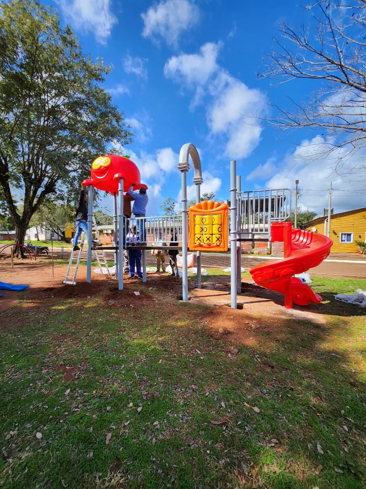

<!DOCTYPE html>
<html lang="es" class="scroll-smooth">

</html>

<head>
    <meta charset="UTF-8">
    <meta name="viewport" content="width=device-width, initial-scale=1.0">
    <title>Obras Públicas | Municipalidad</title>
    <link href="https://cdn.jsdelivr.net/npm/tailwindcss@3.3.0/dist/tailwind.min.css" rel="stylesheet">
    <link rel="stylesheet" href="https://cdnjs.cloudflare.com/ajax/libs/font-awesome/5.15.3/css/all.min.css">
    <script src="https://cdn.tailwindcss.com"></script>
    <link rel="stylesheet" href="https://cdn.jsdelivr.net/npm/swiper@11/swiper-bundle.min.css" />
    <link rel="stylesheet" href="https://cdnjs.cloudflare.com/ajax/libs/font-awesome/6.5.0/css/all.min.css" />
    <link rel="shortcut icon" href="santa.ico" type="image/x-icon" />
</head>

<body class="bg-white text-gray-800">
    <!-- HEADER - ocupa 100% de ancho -->
    <header class="shadow-md p-2 w-full" style="background-color: #fbff00;">
        <div class="flex items-center justify-center flex-wrap gap-6 px-4">
            <!-- Logo + Título -->
            <div class="flex items-center gap-3">
                
                <h1 class="text-lg font-bold text-black">MUNICIPALIDAD DE SANTA ANA</h1>
            </div>
            <!-- Menú de navegación -->
            <nav class="mt-2 md:mt-0 justify-center">
                <ul class="flex flex-wrap gap-4 text-sm font-semibold text-black">
                    <!-- GOBIERNO -->
                    <li class="relative group">
                        <a href="#" class="hover:text-green-900" data-toggle="gobierno">GOBIERNO</a>
                        <div data-menu="gobierno" class="hidden absolute z-10 bg-white shadow-xl rounded-lg p-4 mt-2 w-64 border border-gray-200
               left-0 group-hover:block">
                            <ul class="space-y-2 text-sm text-gray-800">
                                <li><a href="#" class="flex items-center gap-2 hover:text-green-800 transition"><i
                                            class="fas fa-user-tie text-green-600"></i> Intendenta Lic. M. Mabel
                                        Pezoa</a></li>
                                <li><a href="#" class="flex items-center gap-2 hover:text-green-800 transition"><i
                                            class="fas fa-user-tie text-green-600"></i> Presidente HCD Prof. Eikman
                                        Matías</a></li>
                                <li><a href="#" class="flex items-center gap-2 hover:text-green-800 transition"><i
                                            class="fas fa-user text-green-600"></i> Vice-Presidente Mariela Scholles</a>
                                </li>
                                <li><a href="#" class="flex items-center gap-2 hover:text-green-800 transition"><i
                                            class="fas fa-user text-green-600"></i>Concejal Otilia Alderete</a>
                                </li>
                                <li><a href="#" class="flex items-center gap-2 hover:text-green-800 transition"><i
                                            class="fas fa-user text-green-600"></i>Concejal Olivera Sandro</a>
                                </li>
                                <li><a href="#" class="flex items-center gap-2 hover:text-green-800 transition"><i
                                            class="fas fa-user text-green-600"></i>Concejal Dario Vera</a></li>
                                <li><a href="#" class="flex items-center gap-2 hover:text-green-800 transition"><i
                                            class="fas fa-user-cog text-green-600"></i> Secretaria del Concejo Salina
                                        Priscila</a></li>
                                <li><a href="#" class="flex items-center gap-2 hover:text-green-800 transition"><i
                                            class="fas fa-user-cog text-green-600"></i> Pro-Secretaria Mezetti
                                        Daniela</a></li>
                            </ul>
                        </div>
                    </li>
                    <!-- NOTICIAS -->
                    <li><a href="noticias.html" class="hover:text-green-900">NOTICIAS</a></li>
                    <!-- TURISMO -->
                    <li><a href="index.html" class="hover:text-green-900">TURISMO</a></li>
                    <!-- ACTIVIDADES -->
                    <li><a href="actividades.html" class="hover:text-green-900">ACTIVIDADES</a></li>
                    <!-- CONTACTOS -->
                    <li class="relative group">
                        <a href="" class="hover:text-green-900" data-toggle="contactos">CONTACTOS</a>
                        <div data-menu="contactos" class="hidden absolute z-10 bg-white shadow-xl rounded-lg p-4 mt-2 w-64 border border-gray-200
               left-0 group-hover:block">
                            <ul class="space-y-2 text-sm text-gray-800">
                                <li><a href="https://wa.me/5493765216291?text=Hola,%20quisiera%20información%20sobre%20la%20Municipalidad"
                                        target="_blank"
                                        class="flex items-center gap-2 hover:text-green-800 transition"><i
                                            class="fab fa-whatsapp text-green-600"></i> Mesa de Entrada</a></li>
                                <li><a href="https://wa.me/5493765216293?text=Hola,%20quisiera%20información%20sobre%20Recaudaciones"
                                        target="_blank"
                                        class="flex items-center gap-2 hover:text-green-800 transition"><i
                                            class="fab fa-whatsapp text-green-600"></i> Recaudaciones</a></li>
                                <li><a href="https://wa.me/5493765208091?text=Hola,%20quisiera%20información%20sobre%20Calidad%20De%20Vida"
                                        target="_blank"
                                        class="flex items-center gap-2 hover:text-green-800 transition"><i
                                            class="fab fa-whatsapp text-green-600"></i> Calidad de Vida</a></li>
                                <li><a href="https://wa.me/5493765208039?text=Hola,%20quisiera%20información%20sobre%20Obra%20Pública"
                                        target="_blank"
                                        class="flex items-center gap-2 hover:text-green-800 transition"><i
                                            class="fab fa-whatsapp text-green-600"></i> Obra Pública</a></li>
                                <li><a href="https://wa.me/5493765216294?text=Hola,%20quisiera%20información%20sobre%20Agua%20Potable"
                                        target="_blank"
                                        class="flex items-center gap-2 hover:text-green-800 transition"><i
                                            class="fab fa-whatsapp text-green-600"></i> Agua Potable</a></li>
                            </ul>
                        </div>
                    </li>
                </ul>
            </nav>
        </div>
    </header>
    <!-- BARRA INFERIOR 100% ANCHO -->
    <div class="w-full text-black" style="background-color: #fbff00;">
        <div class="flex flex-wrap justify-center items-center gap-2 py-1 px-4 text-sm">
            <span>FM 94.7</span>
            <span>|</span>
            <span>@santaanamunicipalidad</span>
            <span>|</span>
            <span>Av. San Martín & Belgrano</span>
            <span>|</span>
            <i class="fas fa-phone"></i>
            <span>+54 9 3765-216291</span>
        </div>
    </div>
    <!-- Header -->
    <header class="bg-white border-b border-gray-300 shadow-sm py-6 mb-8">
        <div class="max-w-6xl mx-auto px-4 flex justify-between items-center">
            <h1 class="text-3xl font-extrabold text-gray-900 tracking-tight"> Arreglos y Asfaltado en Santa Ana</h1>

            <!-- Botón estético en verde -->
            <a href="index.html"
                class="inline-flex items-center gap-2 text-white bg-green-600 hover:bg-green-700 transition duration-300 px-4 py-2 rounded-full shadow-md text-sm font-semibold">
                <svg xmlns="http://www.w3.org/2000/svg" class="h-4 w-4" fill="none" viewBox="0 0 24 24"
                    stroke="currentColor" stroke-width="2">
                    <path stroke-linecap="round" stroke-linejoin="round" d="M15 19l-7-7 7-7" />
                </svg>
                Volver al inicio
            </a>
        </div>
    </header>
    <!-- Script para mostrar u ocultar los menús desplegables -->
    <script>
        document.addEventListener("DOMContentLoaded", () => {
            const toggles = document.querySelectorAll("[data-toggle]");
            toggles.forEach(toggle => {
                toggle.addEventListener("click", (e) => {
                    e.preventDefault();
                    const menuName = toggle.getAttribute("data-toggle");
                    const menu = document.querySelector(`[data-menu="${menuName}"]`);
                    // Cierra otros menús abiertos
                    document.querySelectorAll("[data-menu]").forEach(m => {
                        if (m !== menu) m.classList.add("hidden");
                    });
                    // Toggle de visibilidad
                    menu.classList.toggle("hidden");
                });
            });
            // Oculta el menú si se hace clic fuera
            document.addEventListener("click", (e) => {
                if (!e.target.closest("[data-toggle]") && !e.target.closest("[data-menu]")) {
                    document.querySelectorAll("[data-menu]").forEach(m => m.classList.add("hidden"));
                }
            });
        });
    </script>
    <section class="bg-white py-16">
        <div class="max-w-5xl mx-auto px-4 text-center">
            <p class="text-lg text-gray-600 mb-4">
                A continuación se muestra el mapa con las calles y zonas que fueron intervenidas con trabajos de
                asfaltado, bacheo y mejoras en la vía pública.
            </p>
            <!-- Leyenda de colores -->
            <div class="flex justify-center gap-6 items-center mb-8">
                <div class="flex items-center gap-2">
                    <div class="w-5 h-5 bg-orange-400 rounded-sm border border-gray-300"></div>
                    <span class="text-gray-700 text-sm">Calles de tierra arregladas</span>
                </div>
                <div class="flex items-center gap-2">
                    <div class="w-5 h-5 bg-yellow-300 rounded-sm border border-gray-300"></div>
                    <span class="text-gray-700 text-sm">Calles asfaltadas</span>
                </div>
            </div>
            <!-- Imagen del mapa -->
            <div class="overflow-x-auto rounded-xl shadow-xl border border-gray-200">
                
            </div>
            <!-- Pie de imagen -->
            <p class="text-sm text-gray-500 mt-4">📍 Mapa actualizado con zonas intervenidas — Municipalidad de Santa
                Ana</p>

            <section class="text-center py-12 px-4">
                <h3 class="text-3xl font-bold text-gray-800 mb-4">
                    Incorporación de nuevos juegos en la Plaza de Santa Ana.
                </h3>

                <p class="text-gray-600 mb-8 max-w-2xl mx-auto">
                    En el marco de las acciones de mejora de los espacios públicos de la localidad, se llevó a cabo la
                    instalación de nuevos juegos infantiles en la plaza central de Santa Ana.

                    El objetivo principal es ofrecer a los niños y niñas de la comunidad un espacio de recreación más
                    seguro, atractivo y completo, fomentando la integración familiar y el disfrute al aire libre.

                    Con esta incorporación, seguimos trabajando para fortalecer los lugares de encuentro social y
                    brindar a los vecinos un entorno adecuado para el esparcimiento y la convivencia.

                    Municipalidad de Santa Ana.
                </p>
            </section>
            <div class="grid grid-cols-1 sm:grid-cols-2 lg:grid-cols-3 gap-6 px-4">
                <!-- Imagenes -->
                <div class="overflow-hidden rounded-xl shadow-lg cursor-pointer" onclick="openModal('Obras/PLAZA.jpg')">
                    
                </div>
                <div class="overflow-hidden rounded-xl shadow-lg cursor-pointer"
                    onclick="openModal('Obras/PLAZA (1).jpg')">
                    
                </div>
                <div class="overflow-hidden rounded-xl shadow-lg cursor-pointer"
                    onclick="openModal('Obras/PLAZA (2).jpg')">
                    
                </div>
            </div>

            <!-- Galería de obras en acción -->
            <div class="mt-16 relative z-0">
                <section class="text-center py-12 px-4">
                    <h3 class="text-3xl font-bold text-gray-800 mb-4">
                        Trabajos realizados en el Cerro de Santa Ana
                    </h3>

                    <p class="text-gray-600 mb-8 max-w-2xl mx-auto">
                        Personal municipal y maquinaria en acción durante las tareas de mejora de caminos, para
                        facilitar el
                        acceso de los vecinos y la seguridad de los mismos.
                    </p>

                    <ul class="max-w-xl mx-auto text-left text-gray-700 list-disc list-inside space-y-2">
                        <li>Calle acceso a la Comunidad aborigen Santa Ana Miri</li>
                        <li>Escuela del cerro 166</li>
                        <li>Calle de Scherr</li>
                        <li>Entrada a las cabañas DyD</li>
                        <li>Entrada a las cabañas La Victoria</li>
                        <li>Itatí Juañuk</li>
                        <li>Entrada a La Tranquilidad</li>
                    </ul>
                </section>

                <div class="grid grid-cols-1 sm:grid-cols-2 lg:grid-cols-3 gap-6 px-4">
                    <!-- Imagenes -->
                    <div class="overflow-hidden rounded-xl shadow-lg cursor-pointer"
                        onclick="openModal('Obras/arreglo cerro (1).jpg')">
                        
                    </div>
                    <div class="overflow-hidden rounded-xl shadow-lg cursor-pointer"
                        onclick="openModal('Obras/arreglo cerro (2).jpg')">
                        
                    </div>
                    <div class="overflow-hidden rounded-xl shadow-lg cursor-pointer"
                        onclick="openModal('Obras/arreglo cerro (3).jpg')">
                        
                    </div>
                    <div class="overflow-hidden rounded-xl shadow-lg cursor-pointer"
                        onclick="openModal('Obras/arreglo cerro (4).jpg')">
                        
                    </div>
                    <div class="overflow-hidden rounded-xl shadow-lg cursor-pointer"
                        onclick="openModal('Obras/arreglo cerro.jpg')">
                        
                    </div>
                    <div class="overflow-hidden rounded-xl shadow-lg cursor-pointer"
                        onclick="openModal('Obras/arreglo cerro (5).jpg')">
                        
                    </div>
                </div>
                <!-- Modal de imagen -->
                <div id="imageModal"
                    class="fixed inset-0 bg-black bg-opacity-80 flex items-center justify-center hidden z-50">
                    <div class="relative max-w-4xl w-full px-4">
                        <!-- Botón de cerrar estilizado -->
                        <button onclick="closeModal()"
                            class="absolute top-4 right-4 bg-white text-black hover:bg-red-600 hover:text-white rounded-full p-2 shadow-lg transition-all duration-300 focus:outline-none focus:ring-2 focus:ring-red-500">
                            <svg xmlns="http://www.w3.org/2000/svg" class="h-6 w-6 md:h-8 md:w-8" fill="none"
                                viewBox="0 0 24 24" stroke="currentColor" stroke-width="2">
                                <path stroke-linecap="round" stroke-linejoin="round" d="M6 18L18 6M6 6l12 12" />
                            </svg>
                        </button>
                        
                    </div>
                </div>
            </div>
            <section class="text-center py-12 px-4">
                <h3 class="text-3xl font-bold text-gray-800 mb-4">
                    Arreglos en las Manzanas 203 - 204 - 236 - 235.
                </h3>

                <p class="text-gray-600 mb-8 max-w-2xl mx-auto">
                    Se realizaron tareas de nivelación y mantenimiento de los caminos de tierra en las manzanas 203,
                    204, 235 y 236, con el objetivo de mejorar la transitabilidad y el acceso para los vecinos de la
                    zona.

                    Estas mejoras forman parte de un plan de mantenimiento vial que busca facilitar la circulación,
                    especialmente en días de lluvia, y garantizar mayor seguridad para quienes viven o transitan por el
                    lugar.
                </p>
            </section>
            <div class="grid grid-cols-1 sm:grid-cols-2 lg:grid-cols-3 gap-6 px-4">
                <!-- Imagenes -->
                <div class="overflow-hidden rounded-xl shadow-lg cursor-pointer"
                    onclick="openModal('Obras/Manzana 203.jpg')">
                    
                </div>
                <div class="overflow-hidden rounded-xl shadow-lg cursor-pointer"
                    onclick="openModal('Obras/Manzana 203(1).jpg')">
                    
                </div>
                <div class="overflow-hidden rounded-xl shadow-lg cursor-pointer"
                    onclick="openModal('Obras/Manzana 203(2).jpg')">
                    
                </div>
            </div>

            <section class="text-center py-12 px-4">
                <h3 class="text-3xl font-bold text-gray-800 mb-4">
                    Mejoras en los caminos de tierra – Manzanas 236 y 245
                </h3>

                <p class="text-gray-600 mb-8 max-w-2xl mx-auto">
                    El equipo municipal llevó a cabo trabajos de arreglo y mantenimiento en los caminos de tierra de la
                    manzana 236, la manzana 245 y en el sector inferior de esta última.
                    Estas tareas tuvieron como objetivo mejorar la circulación y el acceso de los vecinos, especialmente
                    en días de lluvia, garantizando mayor seguridad y comodidad para todos los que transitan por la
                    zona.
                </p>
            </section>
            <div class="grid grid-cols-1 sm:grid-cols-2 lg:grid-cols-3 gap-6 px-4">
                <!-- Imagenes -->
                <div class="overflow-hidden rounded-xl shadow-lg cursor-pointer"
                    onclick="openModal('Obras/Manza 245.jpg')">
                    
                </div>
                <div class="overflow-hidden rounded-xl shadow-lg cursor-pointer"
                    onclick="openModal('Obras/Manza 245 (1).jpg')">
                    
                </div>
                <div class="overflow-hidden rounded-xl shadow-lg cursor-pointer"
                    onclick="openModal('Obras/Manza 245 (2).jpg')">
                    
                </div>
            </div>

        </div>
    </section>
    </div>
    <footer class="bg-black/80 text-white py-10 mt-12 rounded-t-2xl shadow-inner backdrop-blur-sm">
        <div class="max-w-7xl mx-auto px-4">
            <!-- Sección de Contactos -->
            <div class="mb-6">
                <h2 class="text-center text-xl font-semibold mb-6">Contactos Municipales</h2>
                <div class="grid grid-cols-2 sm:grid-cols-3 md:grid-cols-6 gap-4 justify-items-center">
                    <!-- Municipalidad -->
                    <a href="https://wa.me/5493765216291?text=Hola,%20quisiera%20poder%20hablar%20con%20la%20Intendenta"
                        target="_blank"
                        class="flex flex-col items-center gap-2 text-center hover:text-green-400 transition">
                        <i class="fas fa-city text-3xl"></i>
                        <p class="text-sm">Mesa de Entrada</p>
                    </a>
                    <!-- Recaudaciones -->
                    <a href="https://wa.me/5493765216293?text=Hola,%20quisiera%20información%20sobre%20Recaudaciones"
                        target="_blank"
                        class="flex flex-col items-center gap-2 text-center hover:text-green-400 transition">
                        <i class="fas fa-wallet text-3xl"></i>
                        <p class="text-sm">Recaudaciones</p>
                    </a>
                    <!-- Calidad de Vida -->
                    <a href="https://wa.me/5493765208091?text=Hola,%20quisiera%20información%20sobre%20Calidad%20de%20Vida"
                        target="_blank"
                        class="flex flex-col items-center gap-2 text-center hover:text-green-400 transition">
                        <i class="fas fa-heartbeat text-3xl"></i>
                        <p class="text-sm">Calidad de Vida</p>
                    </a>
                    <!-- Obra Pública -->
                    <a href="https://wa.me/5493765208039?text=Hola,%20quisiera%20información%20sobre%20Obra%20Pública"
                        target="_blank"
                        class="flex flex-col items-center gap-2 text-center hover:text-green-400 transition">
                        <i class="fas fa-tools text-3xl"></i>
                        <p class="text-sm">Obra Pública</p>
                    </a>
                    <!-- Agua Potable -->
                    <a href="https://wa.me/5493765216294?text=Hola,%20quisiera%20información%20sobre%20Agua%20Potable"
                        target="_blank"
                        class="flex flex-col items-center gap-2 text-center hover:text-green-400 transition">
                        <i class="fas fa-tint text-3xl"></i>
                        <p class="text-sm">Agua Potable</p>
                    </a>
                    <!-- Feriantes -->
                    <a href="https://chat.whatsapp.com/IKqujeJkOi54nDEFW3yyCT" target="_blank"
                        class="flex flex-col items-center gap-2 text-center hover:text-green-400 transition">
                        <i class="fab fa-whatsapp text-3xl"></i>
                        <p class="text-sm">Grupo Feriantes</p>
                    </a>
                </div>
            </div>
            <!-- Derechos -->
            <p class="text-center text-xs md:text-sm mt-8">&copy; Municipalidad de Santa Ana. Todos los derechos
                reservados.</p>
        </div>
    </footer>
    <script>
        function openModal(imageSrc) {
            const modal = document.getElementById('imageModal');
            const modalImg = document.getElementById('modalImage');
            modalImg.src = imageSrc;
            modal.classList.remove('hidden');
        }

        function closeModal() {
            const modal = document.getElementById('imageModal');
            modal.classList.add('hidden');
        }
    </script>
</body>

</html>